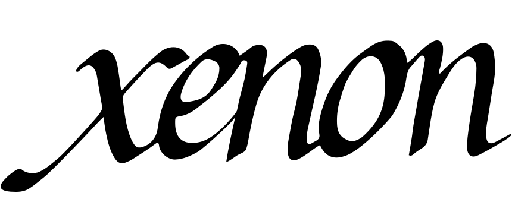

Calligraphy

The calligraphy „Xenon“ evolved as a free project and mainly served the purpose of exploring and training my typographic abilities. It was made by hand with a classic broad-edged pen and afterwards digitalized. Here you can see a classic italic calligraphy, a style which was widely spread among writers before the industrial book printing process conquered first europe and then the rest of the world. Early Antiqua printing fonts evolved from this style. Looking at the angled strokes on the „O“ or the „e“ and the differing stroke-widths in each letter, you can clearly recognize their origin - handmade letters, for which broad-edged pens were used.
The art of calligraphy, handlettering and typography in general are one of my favorite subjects in design. Whether it is in my daily work as a designer or my free time - composition, the practical execution and details of letters as well as readability and the conveying of meaning and emotions (the list could go on) are things I enjoy dealing with.